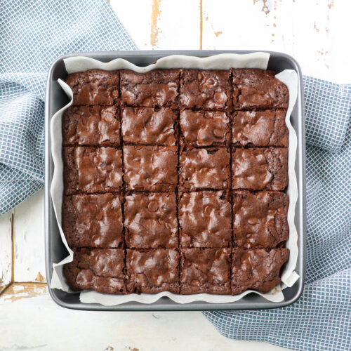

Vegan Brownies Recipe

Description
Easy, delicious recipe for brownies. Prep time of 25 minutes.
Ingredients
- Cocoa powder
- Baking powder
- Ground flax
- Sugar
- Brown sugar
- Vegan butter
- Chocolate chips
- Salt
Steps
- Stir ground flax with water to make egg like mixture. Set aside.
- Preheat oven to 350 degrees. Line the pan with parchment paper.
- Whisk melted butter, sugars, and the flax. Mix well.
- Sift in flour and cocoa powder to mixture. Add salt and baking powder.
Stir until just combined.
- Fold in chocolate chips.
- Pour batter into pan.
- Bake for 35-40 minutes.
- Let cool before slicing into squares.
Home